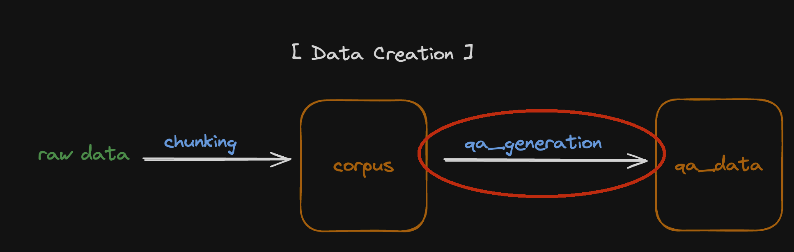

Start creating your own evaluation data¶
Index¶
Overview¶
For the evaluation of RAGs we need data, but in most cases we have little or no satisfactory data.
However, since the advent of LLM, creating synthetic data has become one of the good solutions to this problem.
The following guide covers how to use LLM to create data in a form that AutoRAG can use.

AutoRAG aims to work with Python’s ‘primitive data types’ for scalability and convenience.
Therefore, to use AutoRAG, you need to convert your raw data into corpus data and qa data to our data format.
Make corpus data from raw documents¶
Load your raw data to texts with loaders such as lama_index, LangChain, etc.
Chunk the texts into passages. Use Langchain, LlamaIndex, etc.
Make it into corpus data to use converter functions. There are converter functions for llama index
Document,TextNode, and LangchainDocumentobjects, which isllama_document_to_parquet,llama_text_node_to_parquet, andlangchain_document_to_parquet.
Use Llama Index
from llama_index.core import SimpleDirectoryReader
from llama_index.core.node_parser import TokenTextSplitter
from autorag.data.corpus import llama_text_node_to_parquet
documents = SimpleDirectoryReader('your_dir_path').load_data()
nodes = TokenTextSplitter().get_nodes_from_documents(documents=documents, chunk_size=512, chunk_overlap=128)
corpus_df = llama_text_node_to_parquet(nodes, 'path/to/corpus.parquet')
Use LangChain
from langchain_community.document_loaders import DirectoryLoader
from langchain_text_splitters import RecursiveCharacterTextSplitter
from autorag.data.corpus import langchain_documents_to_parquet
documents = DirectoryLoader('your_dir_path', glob='**/*.md').load_data()
documents = RecursiveCharacterTextSplitter(chunk_size=512, chunk_overlap=128).split_documents(documents)
corpus_df = langchain_documents_to_parquet(documents, 'path/to/corpus.parquet')
Tip
The format for corpus data can be found corpus data format
Make qa data from corpus data¶
Tip
The format for qa data can be found qa data format
import pandas as pd
from llama_index.llms.openai import OpenAI
from autorag.data.qacreation import generate_qa_llama_index, make_single_content_qa
corpus_df = pd.read_parquet('path/to/corpus.parquet')
llm = OpenAI(model='gpt-3.5-turbo', temperature=1.0)
qa_df = make_single_content_qa(corpus_df, 50, generate_qa_llama_index, llm=llm, question_num_per_content=1,
output_filepath='path/to/qa.parquet')
generate_qa_llama_index is a function designed to generate questions and its generation_gt per content.
You can set the number of questions per content by changing question_num_per_content parameter.
And the make_single_content_qa function is designed to generate qa.parquet file using input function.
It generates ‘single content’ qa data, also known as ‘single-hop’ or ‘single-document’ QA data.
Which means it uses only one passage per question for answering the question.
What is passage?
Passage is chunked units from raw data.
Use custom prompt¶
You can use custom prompt to generate qa data. The prompt must contains two placeholders:
{{text}}: The content string
{{num_questions}}: The number of questions to generate
import pandas as pd
from llama_index.llms.openai import OpenAI
from autorag.data.qacreation import generate_qa_llama_index, make_single_content_qa
prompt = """
Generate question and answer pairs for the given passage.
Passage:
{{text}}
Number of questions to generate: {{num_questions}}
Example:
[Q]: What is this?
[A]: This is a sample question.
Result:
"""
corpus_df = pd.read_parquet('path/to/corpus.parquet')
llm = OpenAI(model='gpt-3.5-turbo', temperature=1.0)
qa_df = make_single_content_qa(corpus_df, content_size=50, qa_creation_func=generate_qa_llama_index,
llm=llm, prompt=prompt, question_num_per_content=1)
Use multiple prompts¶
If you want to generate different types of question and answer pairs, you can use multiple prompts. From now, we support distributing multiple prompts by randomly based on the ratio of each prompt. It means that the prompt will be selected by ratio per passage.
For this, you must provide a dictionary. The dictionary must have the key, which is the prompt text file path, and the value which is the ratio of the prompt.
import pandas as pd
from llama_index.llms.openai import OpenAI
from autorag.data.qacreation import generate_qa_llama_index_by_ratio, make_single_content_qa
ratio_dict = {
'prompt1.txt': 1,
'prompt2.txt': 2,
'prompt3.txt': 3
}
corpus_df = pd.read_parquet('path/to/corpus.parquet')
llm = OpenAI(model='gpt-3.5-turbo', temperature=1.0)
qa_df = make_single_content_qa(corpus_df, content_size=50, qa_creation_func=generate_qa_llama_index_by_ratio,
llm=llm, prompts_ratio=ratio_dict, question_num_per_content=1, batch=6)
Warning
Remeber all prompts must have the placeholders {{text}} and {{num_questions}}.